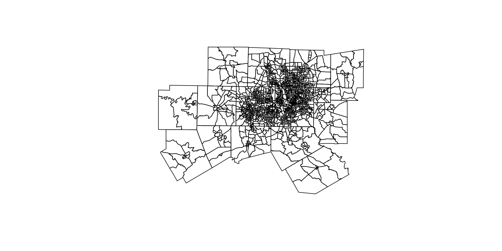
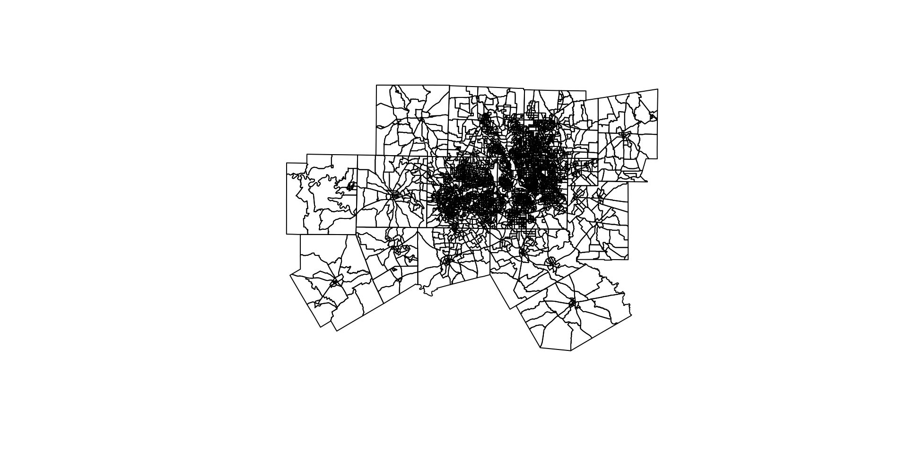
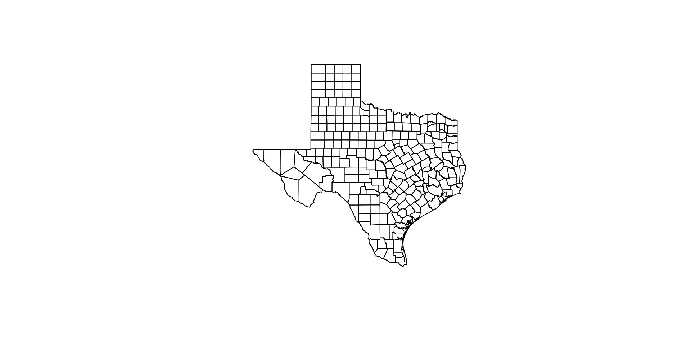
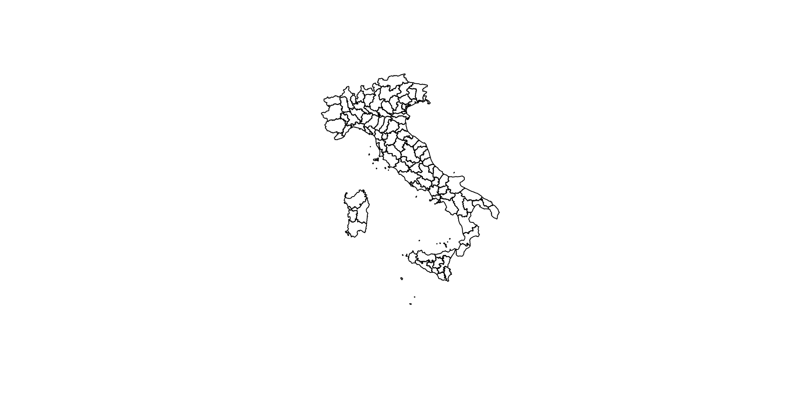
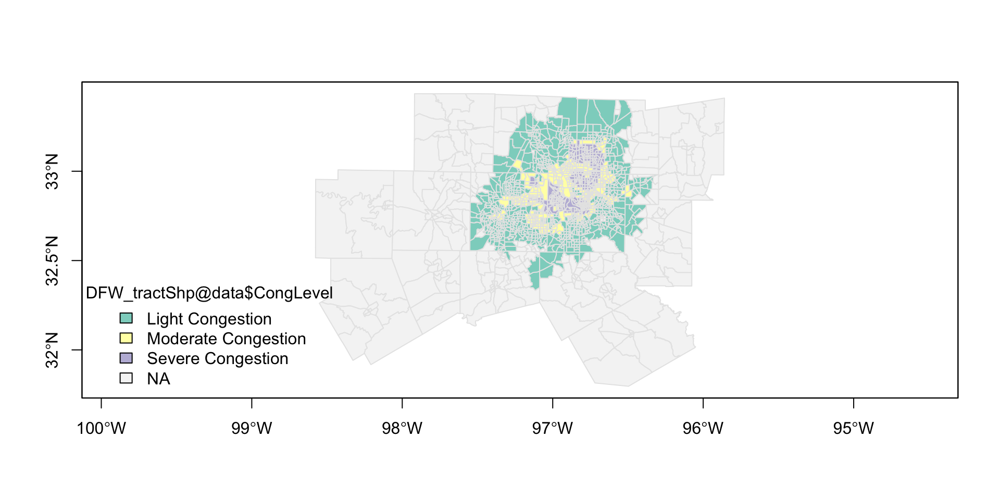
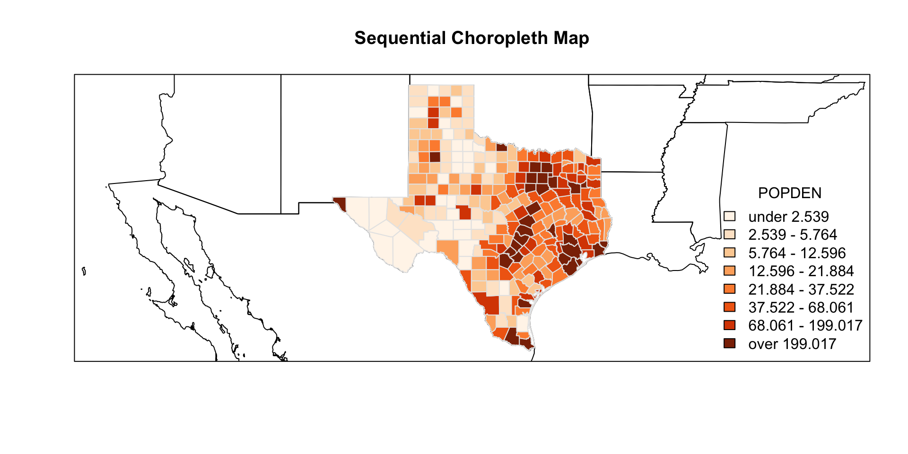
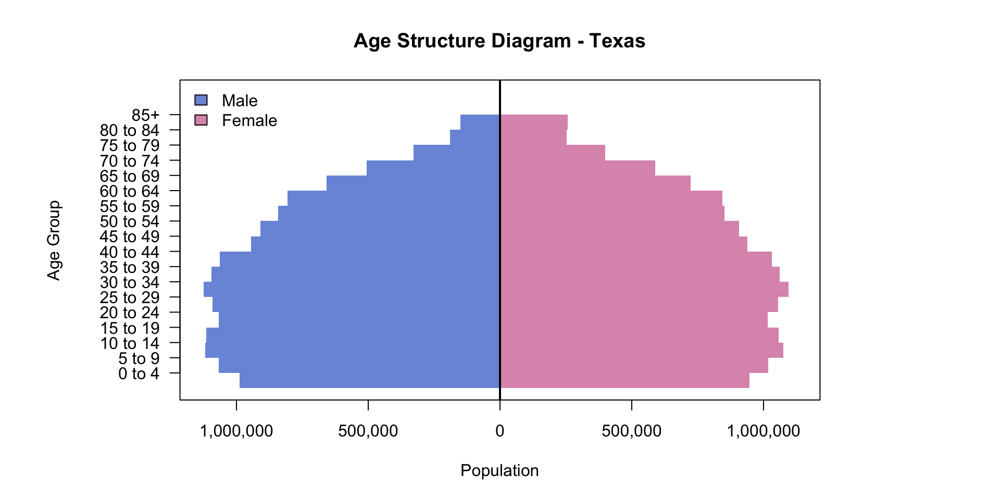
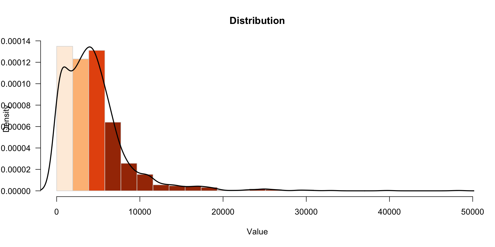
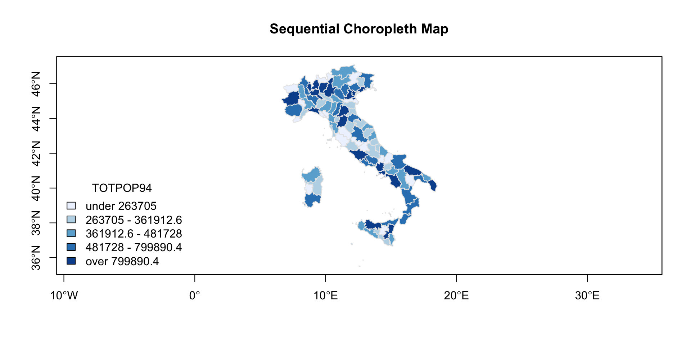

An R Package for Teaching Demographic, Migration, and Spatial Data Analysis
2026-07-27
I. Introduction
II. Literature Review
III. Study Area and Data Sources
IV. Analysis / Methodology
V. Results and Discussion
VI. Conclusions and Future Study
VII. References / Bibliography
R package built to support teaching spatial demographic analysis at UT DallasR, with easily interpretable code that students can use as a reference when writing their own scriptssdf for basemapsflow2vec, ageStructure, viewPaletteSpread; updated mapColorRampsp / sf ecosystemflow2vec) and age-structure diagrams (ageStructure) that are otherwise assembled ad hocmapColorRamp, viewPaletteSpread) aimed at consistent, accessible thematic mappingflow2vec generalizes this stepviewPaletteSpread gives users a diagnostic tool



[1] "GEOID" "NAME" "LANDAREA" "WATERAREA"
[5] "NIGHTPOP" "POPDEN" "MALE" "FEMALE"
[9] "MEDAGE" "PCTWHITE" "PCTBLACK" "PCTASIAN"
[13] "PCTHISPAN" "PCTMINOR" "PCTNOHIGH" "PCTUNIVDEG"
[17] "PCTPUB2WRK" "HHMEDINC" "MEDFAMINC" "PERCAPINC"
[21] "PCTPOPPOV" "PCTFAMPOV" "PCTUNEMP" "PCTHUVAC"
[25] "MEDVALHOME" "PCTNOVEH" "PCTNOHINS" "PCTB2010"
[29] "PCTB2000" "PCTB1990" "PCTB1980" "PCTB1970"
[33] "PCTB1960" "PCTB1950" "PCTB1940" "PCTBPRE"
[37] "SchoolDistrict" "Municipality" "CongLevel" 

flow2vecprepIJDfin an in-class script; renamed and substantially rebuilt ID.i ID.j ID.ij mij dij TOTPOP94.i TOTPOP94.j TOTPOP94.ijL TOTFERTRAT.i
1 1 1 101 0 NA 292298 292298 0.0000000 1.29
2 2 1 201 16899 NA 387305 292298 0.2814387 1.19
3 3 1 301 1571 NA 239829 292298 -0.1978477 1.29
4 4 1 401 1938 NA 699407 292298 0.8724590 1.53
5 5 1 501 1160 NA 1554178 292298 1.6709282 1.46
6 6 1 601 281 NA 402118 292298 0.3189717 1.38
TOTFERTRAT.j TOTFERTRAT.ijL
1 1.29 0.00000000
2 1.29 -0.08068891
3 1.29 0.00000000
4 1.29 0.17062552
5 1.29 0.12379422
6 1.29 0.06744128ageStructure
viewPaletteSpreadmapColorRamp function by letting users see how observations are distributed within the palette
mapColorRamp
flow2vec parallelizes calculations across columns instead of row-wise iteration, improving performance on large datasetsflow2vec, ageStructure, viewPaletteSpread) are now covered by automated tests, supporting long-term reliability and CRAN submission readinessflow2vec’s vectorized approachflow2vec, ageStructure, viewPaletteSpread)sf package once sp is decomissioned